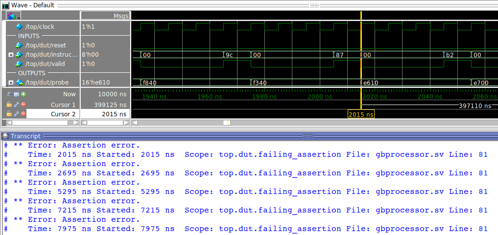
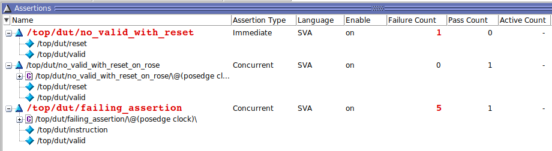

In the previous chapter, covergroups and coverpoints were introduced. These form one type of functional coverage: functional coverage focused on the data. As already mentioned, the other part is functional coverage focused on the control part of a design. This is done through assertions and is the topic of this chapter.
Everything up until this point has been done outside of the DUT. Assertions are checks that are embedded IN the DUT. These checks give a true or false result based on an assumed property. Although assertions reside IN the DUT, they are a part of verification.
A natural question would be: Who needs to write assertions: the developer or the verification engineer ?. Well, the answer is simple: both. For the sake of completeness it is mentioned that there are several other languages, next to SystemVerilog Assertions (SVA), that can be used to write assertions, e.g.: e, OVL, and PSL.
In short: assertions are used to specify conditions that a programmer assumes are true.
SystemVerilog provides two types of assertions:
These assertions are evaluated immediately. They have to be placed in a procedural block (in an initial or always block).
Example:
/* I assume that valid and reset can NEVER be '1' simultaneously */
initial
begin
no_valid_with_reset: assert (~(valid & reset)) $display("%m pass"); else $info("%m fail");
end
When an immediate assertion is evaluated to 1 it is interpreted as true, any other value (0, X, or Z) is interpreted as false.
Immediate assertions can have a severity: $fatal, $error, $warning, and $info.
These assertions are evaluated on a set temporal condition. Next to in a procedural block they can also be placed in a module, interface or program definition.
Example:
/* I assume that valid and reset can NEVER be '1' on a posedge of clock */
no_valid_with_reset_on_rose : assert property ( @(posedge clock)(~(valid & reset)));
By now you’ll be familiar with posedge and negedge, but there are others means to describe temporal conditions as well:
The difference between posedge and $rose is as follows:
- posedge: 0 -> 1, x -> 1, 0 -> x
- $rose: 0 -> 1, x -> 1
Off course, on the one hand we never want to see an assertion fail; on the other hand, however, it is good to fail because it learns us something. Below is a (pointless) example of an assertion that is expected to fail:
failing_assertion : assert property ( @(posedge clock)(~(valid & instruction == 8'h87)));
This failing_assertion assumes that on a rising clock edge it will never occur that valid is high and the instruction == 0x87. Given enough simulation time, this combination is bound to happen. In the simulator, this will be indicated as shown here.

The simulator can also give a feedback view on all your assertions.
